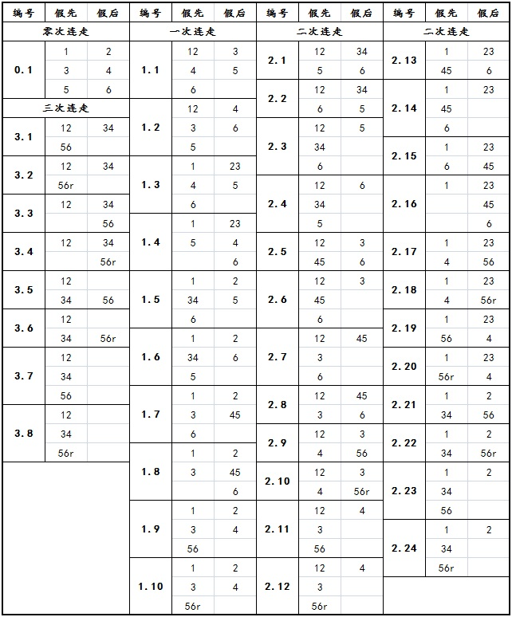

我所设想的博弈规则
#1 我所设想的博弈规则作者：游戏人间 发表时间：2013-5-14 12:13:20
博弈规则我个人的设想是到6手终止，最后可连走手数为5,6.并且放开天元限制，想走在棋盘的哪里就走哪里。哪怕是A1也许都有存在的价值（某年我和某人在天津下过一盘棋，最后A1落子抓对手双禁），并放开固定开局，对前几手落子范围不再限制（因为五子棋本身紧凑的特点就已经限制了落子范围）。禁手依然保留，因为禁手使五子棋在局部的计算上对精确性要求的更高。棋盘大小不好说，毕竟如果放开天元的话棋盘大小已经不再是对变化的禁锢了。［ 絕版賭徒 于 2013-5-14 15:01:33 时花20金币送鲜花一朵］
［ 絕版賭徒 于 2013-5-14 15:01:33 时花20金币送鲜花一朵］
［ 絕版賭徒 于 2013-5-14 15:01:33 时花20金币送鲜花一朵］
［ 絕版賭徒 于 2013-5-14 15:01:33 时花20金币送鲜花一朵］
［ 絕版賭徒 于 2013-5-14 15:01:33 时花20金币送鲜花一朵］
［ 絕版賭徒 于 2013-5-14 15:01:33 时花20金币送鲜花一朵］
［ 絕版賭徒 于 2013-5-14 15:01:33 时花20金币送鲜花一朵］
［ 絕版賭徒 于 2013-5-14 15:01:33 时花20金币送鲜花一朵］
［ 絕版賭徒 于 2013-5-14 15:01:33 时花20金币送鲜花一朵］
［ 絕版賭徒 于 2013-5-14 15:01:33 时花20金币送鲜花一朵］
#2 Re:我所设想的博弈规则作者：游戏人间 发表时间：2013-5-14 12:15:01
相对来说小天设想到8手有着降低难度的考虑，但是我个人觉得难度不应该成为问题，如果从6手开始计算都算不出一个平衡的型状，那基本功也太差了吧。。。#3 Re:我所设想的博弈规则作者：屏蔽 发表时间：2013-5-14 12:28:17
能否更少？#4 Re:我所设想的博弈规则作者：游戏人间 发表时间：2013-5-14 12:32:49
5手是传统RIF下的稳定型，所以不可能比5手更少。另外从黑白双方连走的权利看，只能设置成双数。那么6手自然是比较合适的了。。。#5 Re:我所设想的博弈规则作者：屏蔽 发表时间：2013-5-14 12:38:33
RIF有一个指定开局的问题，到了5手时变化才比较有限。博弈规则没有这个问题，变化不会比RIF少。
OK，我先接受这个偶数原则。
4手会是什么情况？看看能不能考虑一下。
#6 Re:我所设想的博弈规则作者：屏蔽 发表时间：2013-5-14 12:41:26
因为你6手有一个问题，前两手我放A1O15 这个局面依然能下，这样就几乎退化成4手了。
中盘过后边线甚至角落对棋局有重大影响，这个很容易认可，但是很难将开局阶段扔在角落的行为视为有效的（有预谋的）。
虽然无效落子的问题很难避免。但既然存在退化的可能，那就要考虑直接采用更简单的模型？
#7 Re:我所设想的博弈规则作者：游戏人间 发表时间：2013-5-14 12:45:51
4手的话有个很明显的问题，开局一手，后手方立刻就要思考是否连走，而且如果后手方连走的话先手方将没有连走的机会。这样的开局对后手方优势太巨大了。而6手则是双方都存在连走的机会。也不好出现研究一个局面让后根据对手黑1落点来判断的局限性了。同样是在连走权利上的不公平。#8 Re:屏蔽【==Re:我所设想的博弈规则==】作者：游戏人间 发表时间：2013-5-14 12:49:45
你说的这种情况根本不会出现。因为如果开局方上来就连走两步并且扔在角落，那后手方直接开始走黑3随便扔个地方。让后假先方将只能继续选择连走。OK让后一个简单的3手型出现了。这不是自己找死吗？假设第四手假先方不连走那么一个，随便下个必胜定式就行了。因为第六手不在有连走的机会。。。我这么解释能明白吗？#9 Re:我所设想的博弈规则作者：屏蔽 发表时间：2013-5-14 12:50:56
先手方从一开始就拥有连走的权利，却没有连走，这可就怪不得“后手方连走之后先手方就没机会连走”了。
我觉得公平性上并没有问题。
#10 Re:我所设想的博弈规则作者：游戏人间 发表时间：2013-5-14 12:51:28
这也就是为什么要设置成双数的原因。。。避免特定情况的出现。。#11 Re:我所设想的博弈规则作者：屏蔽 发表时间：2013-5-14 12:52:40
8楼这个解释比较在理……恩。#12 Re:我所设想的博弈规则作者：游戏人间 发表时间：2013-5-14 12:53:58
这也是我为何觉得6手比8手合适的原因。8手的话假先方可以利用最后一个连走的机会挽救自己。。。6手就强调了开局的严肃性。#13 Re:我所设想的博弈规则作者：王小 发表时间：2013-5-14 14:21:28
能不能简化，多次交换感觉混乱。#14 Re:我所设想的博弈规则作者：絕版賭徒 发表时间：2013-5-14 15:04:00
大鱼鲜参该找个棋手，在论坛开贴试范几局（比如少帅），文字性的东西，基本都走马观花掉了#15 Re:我所设想的博弈规则作者：絕版賭徒 发表时间：2013-5-14 15:06:51
主要是让对局体现出规则异同点，比如开局,前几6手，前8手，如何交换等，顺便插点文字讲解一下，或许会让陌生该规则的棋友们更容易理解#16 Re:我所设想的博弈规则作者：游戏人间 发表时间：2013-5-14 15:07:01
可以在这次的论坛战试用#17 Re:我所设想的博弈规则作者：絕版賭徒 发表时间：2013-5-14 15:09:37
哈哈，关键是我猜想，其实当有若干棋友压根没明白怎么个博奕法，,,,(比如我吧，是去年小天在YY单独讲了半小时才明白，所以还是得列图试范)#18 Re:我所设想的博弈规则作者：絕版賭徒 发表时间：2013-5-14 15:10:38
即便比赛试用，赛前也得有规则辅导，哈哈，这样容易上手#19 Re:我所设想的博弈规则作者：屏蔽 发表时间：2013-5-14 15:26:59
下过连换其实挺容易理解的，不用太担心。
同意开一个博弈规则组，但是规模不建议太大。
#20 Re:我所设想的博弈规则作者：励精 发表时间：2013-5-14 15:38:32
首先完全同意大鱼老师的分析。有几个小问题：
1. 查百度百科，“博弈论”的解释是：
#21 Re:我所设想的博弈规则作者：没事摆石子玩 发表时间：2013-5-14 15:56:07
孙老师提出得问题不能算个问题吧，如果算问题，这个现象也不是6或8才存在得，连换规则下这个难道就不存在了？ 如果一方消极布局，另外一方难道没有相应得策略吗，单方面是控制不了得吧。。这也就是博弈比塔拉规则高明得地方
#22 Re:我所设想的博弈规则作者：没事摆石子玩 发表时间：2013-5-14 15:59:19
如果在博弈规则下，某方消极落子（此时他必定是单走边角）。那么另一方也单走落子，怎么强怎么下。消极一方如果不想死，就必须连下。而一旦连下消极就被打破了，所以这根本不是问题。#23 Re:我所设想的博弈规则作者：没事摆石子玩 发表时间：2013-5-14 16:01:23
如果消极方最后做了连打，那么他就不合算了。自己做个局设计自己吗，因为对手最后获得了交换权#24 Re:我所设想的博弈规则作者：屏蔽 发表时间：2013-5-14 16:22:10
塔拉和博弈在本质上有巨大区别的，不可能出现消极布局。
塔拉的交换权是规则免费赋予的，而博弈的交换权是通过“牺牲单走强点的机会”换来的
具体到实际就是，一方消极布局时，另一方就积极单走，最后消极的那一方只能主动连走换回均衡。
其实我想说……这个问题不是在6到8楼已经讨论并解决了么。
#25 Re:我所设想的博弈规则作者：励精 发表时间：2013-5-14 16:41:00
看来石子是喜欢交换权不喜欢连打权的。
连换规则设计到最后4-5连打，是考虑到双方通常情况下各有一次连打机会，同时还有一个单子的机会。就此欧洲人提出过一个意见，如果A选手摆一个奇葩的两子，比如白大优，当然是他自己预先算好的陷阱，B选手如果应一子，就等于放弃了连打权，如果连打，很容易落入A的预想之中，如果交换，则正中A的设计，他可以继续布一子，逼对方连打，自己选择颜色掌握主动，也可以按自己的赛前设计继续布两子，形成一个更深的陷阱。这样仅就“赛前研究”这一个问题，对A选手是极为有利的，而对B选手来说，必须有极高的临场算力，用3-4连打来平衡局面。
大鱼老师设计到最后5-6连打，则可能会有一方两次连打，另一方一次连打，这样对双方还是不对等的。如果再延长，比如小天老师设计的7-8，可能会出现更多的问题，比如消极开局，随手开局，初学者难理解掌握等。
开局设计到第几手合适，这是又一个问题。
#26 Re:我所设想的博弈规则作者：没事摆石子玩 发表时间：2013-5-14 16:55:55
总之所谓消极布局得问题是不存在得，孙老师说得都是准备范畴得事情了。。。如果6手截止博弈，你被算计了只能说你技不如人，而且通过各种策略，一般意义上是不存在单方完全掌控局面得方法的，你把被算计得一方想象成太弱了吧。。难道他一点知识量都不具备？ 何况B未必完全放弃布局权，他也是参与布局得，A是神吗 他怎么能保证怎么下都在他得掌握内呢？
#27 Re:我所设想的博弈规则作者：励精 发表时间：2013-5-14 17:06:46
好了，我已经理解了各位老师的思想，受益匪浅。我完全同意将连换（博弈）规则设计到5-6，北京那威俱乐部会在今年适当的时候组织一次试验实战比赛，采用连换5-6规则，欢迎各位前来捧场。
#28 Re:我所设想的博弈规则作者：没事摆石子玩 发表时间：2013-5-14 17:13:31
孙老师说得那个其实我也理解了 确实可能有这种危险情况存在 比如A作为开局方 把黑1下在A1，2下在H8（原点），此时作为B最好得策略不是行棋 ，而是马上交换应该。然后A有两种策略，单走或者连走。其后确实需要小心应对啊，因为B是不知道A准备了什么#29 Re:我所设想的博弈规则作者：没事摆石子玩 发表时间：2013-5-14 17:25:49
其后我们来分析A将会采取什么样得行为。。我个人认为A连走得概率至少占80%，单走20%.先分析单走黑3，此时如果黑3直指，B白4单走花月，黑3斜指，白就走成浦月。如果黑3远离原点，白依然走成斜活2得形态，如下图所示：［此帖子已被 没事摆石子玩 在 2013-5-14 17:26:27 编辑过］
#30 Re:我所设想的博弈规则作者：没事摆石子玩 发表时间：2013-5-14 17:32:41
而如果A选择连下3 4手，B只需要判断4之后黑白优劣情况。如果黑确定优势，B只需要单下5手，确立优势把白6逼给A方。如果是白好下，B果断交换继续暂时执白，考验A方。如果真是白好下 A必然要连下5 6两手，重新构造平衡。如果4之后黑白优劣难定，B得选择还是很多，可以单下5手执黑策略。5 6连下给A出题，或者继续交换，让A给自己出题（如果此时构造平衡感觉有难度，大可以这样） 最后把交换留给自己得计算做判断。。。其实这么看 B应该也没吃亏，只要小心应对#31 Re:没事摆石子玩【==Re:我所设想的博弈规则==】作者：游戏人间 发表时间：2013-5-14 19:17:58
| ../files/2013514191729.jpg |
［此帖子已被 游戏人间 在 2013-5-14 19:18:30 编辑过］
#32 Re:我所设想的博弈规则作者：游戏人间 发表时间：2013-5-14 19:19:14
顺便说下现在爱五子棋怎么没有棋谱编辑了。。。还无法传图呢。。。郁闷#33 Re:我所设想的博弈规则作者：游戏人间 发表时间：2013-5-14 19:23:10
谁有空帮忙把上面的图弄下。。。完全不会搞了。。。#34 Re:我所设想的博弈规则作者：游戏人间 发表时间：2013-5-14 19:24:07
所以所谓的黑1边角并连走两步完全是作茧自缚。。。#35 Re:我所设想的博弈规则作者：游戏人间 发表时间：2013-5-14 19:31:58
或许刚才的图不属于常规开局大家还没看明白。。那么来个和常规开局贴边的。。游星开局。。不会贴图大家自己摆下吧。白二当黑一的游星白开局。。。看看作为假先如何应对。。。估计头疼死。。。#36 Re:我所设想的博弈规则作者：游戏人间 发表时间：2013-5-14 19:49:37
其实从上面这种极端的例子更可以看出设置到6的必要性。首先假先方用一个连走换取了逼迫对手连走的办法。那么假后方就利用禁手的优势来把假先方的这种思维给破坏掉。造成最后假先方作茧自缚。。。而如果只设置到第五手的话，那么在我说的几个例子中假先方在第五手铁定选择交换。从而牢牢控制住优势。。。但是由于6手的存在，那么假先方如果第五手交换就会把最后连走定型的权力交给对手。。。相当于假后方连续走3456四手棋。。我不相信一个职业棋手会一点准备没有。让对手连走四手棋几乎就是自杀的行为。。。因此博弈规则设置到第六手已经从权力上彻底否决了这种极端开局的可能。。。。#37 Re:游戏人间【==Re:我所设想的博弈规则==】作者：梧桐风 发表时间：2013-5-14 19:59:53
引用：换个浏览器就可以解决问题了，像谷歌浏览器火狐神马的把论坛功能去掉了很多
原文由 游戏人间 发表于 2013-5-14 19:19:14 :
顺便说下现在爱五子棋怎么没有棋谱编辑了。。。还无法传图呢。。。郁闷
#38 Re:我所设想的博弈规则作者：游戏人间 发表时间：2013-5-14 20:11:22
哦用什么浏览器比较好啊#39 Re:我所设想的博弈规则作者：tears 发表时间：2013-5-14 20:18:34
理论上的论证目前看不出明显的问题。搞个比赛验证一下吧~
解放天元+前6手博弈，很期待，让我们都重新开始~
#40 Re:游戏人间【==Re:我所设想的博弈规则==】作者：梧桐风 发表时间：2013-5-14 20:19:05
像大鱼智商这么捉鸡的，我看就IE勉强可以了（其实IE核心的浏览器论坛功能都是全的）#41 Re:我所设想的博弈规则作者：游戏人间 发表时间：2013-5-14 20:22:06
我已经在直接使用IE了。。果然啥功能都回来了。。#42 Re:我所设想的博弈规则作者：屏蔽 发表时间：2013-5-14 21:23:10

【6手博弈的43种开局模式】
技术性讨论之后，得有人做点无聊的基础性工作。
#43 Re:我所设想的博弈规则作者：游戏人间 发表时间：2013-5-14 21:39:07
让后就是根据楼上的43种开局模式来判断是否存在BUG吗？虽然我看不懂这图。。但这方法不错。。。#44 Re:我所设想的博弈规则作者：励精 发表时间：2013-5-14 21:46:59
看懂了，43种模式。
0.1多出现在初学者或业余玩家，一人一手。3.7和3.8的开局不好玩，不走棋的一方就是消极开局，只在5-6后再做选择。高手之间可能会出现的二次交换是最合理的。
#45 Re:我所设想的博弈规则作者：屏蔽 发表时间：2013-5-14 21:59:08
判断bug？no no no 我说了 没什么技术性的 不要想太多#46 re:我所设想的博弈规则作者：有志青年 发表时间：2013-5-14 23:17:27
理科生就是让人佩服#47 Re:我所设想的博弈规则作者：釣鱼岛岛主 发表时间：2013-5-14 23:31:32
屏蔽这样的理科生 让人佩服
#48 Re:我所设想的博弈规则作者：屏蔽 发表时间：2013-5-15 6:23:20
其实我一直想知道……博弈规则和连换规则如此相似……你们到底谁抄谁的？
各自独立提出？
#49 Re:我所设想的博弈规则作者：伤情路 发表时间：2013-5-15 8:30:38
文科生用理论说明一切，理科生用数据说明一切。。道长这样的理科生让人佩服
#50 Re:屏蔽【==Re:我所设想的博弈规则==】作者：励精 发表时间：2013-5-15 10:25:51
回48楼，明确的讲，博弈规则在先，连换规则在后，但实质内容是一致的。
博弈规则是小天老师提出的思想，最初设计是指定开局后从第4手到第10手采用连打可交换的方案。
连换规则从初稿就写明了，是“借鉴了戴晓涵老师的博弈规则基本思想”，将连打可交换的方案设计为第1手到第5手(最后4-5连打)，白6落子后确定黑白方。后经台北朋友提醒，最后4-5连打，则该方案应表述为第1手到第４手连打可交换，白6落子后确定黑白方。
现在小天老师将博弈规则设计为第1手到第8手（最后7-8连打）。
前面已经我已说过，博弈一词范围很广，任何斗智类游戏都可称为博弈，对初学者和业余爱好者不易理解。而连换一词就可以很好地表述规则内容。不过，连换也只是暂定名称，希望集思广益起个更好的名字。
#51 Re:我所设想的博弈规则作者：深圳棋人 发表时间：2013-5-25 18:38:49
其实对高手而言，计算精确的话，前10手就可决定胜负